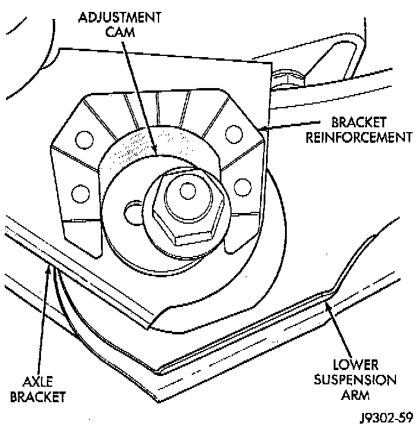
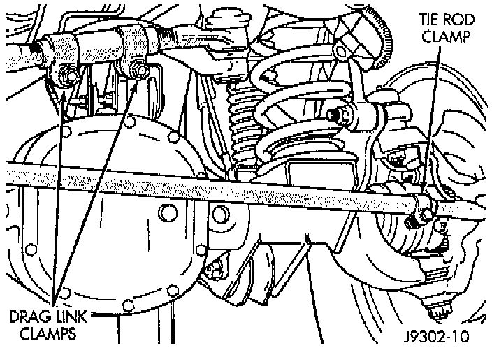
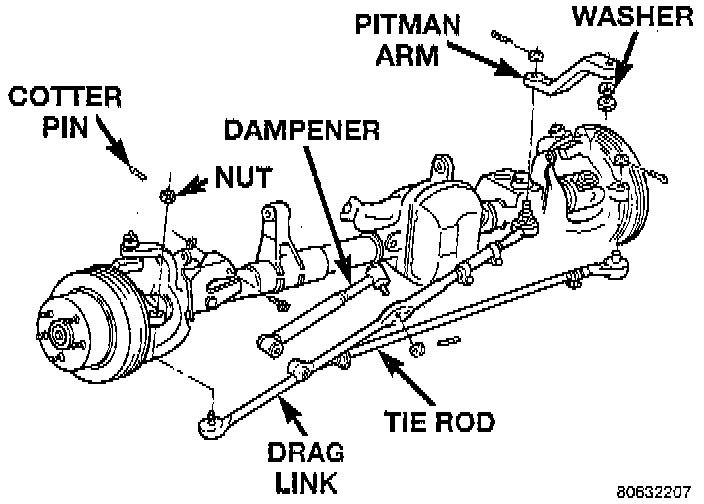
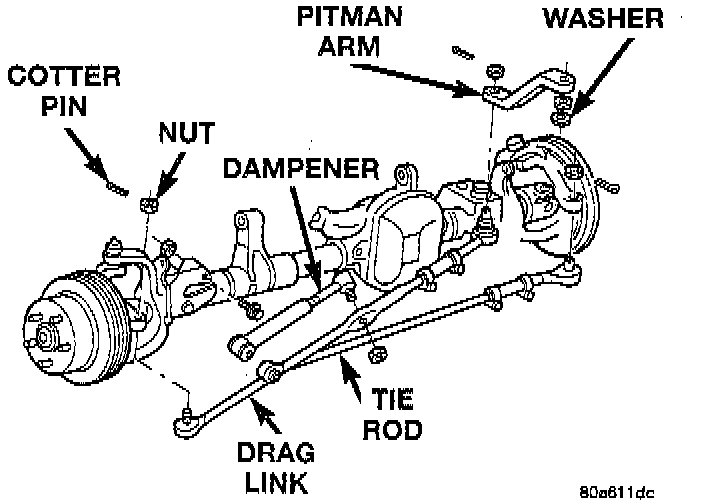

Alignment: Service and Repair
GENERAL INFORMATIONBefore each alignment reading the vehicle should be jounced (rear first, then front). Grasp each bumper at the center and jounce the vehicle up and down three times. Always release the bumper in the down position. To obtain an accurate alignment, a 4 wheel alignment machine must be used and the equipment calibration verified.
CAMBER
The wheel camber angle is preset. This angle is not adjustable and cannot be altered.

CASTER
Before checking the caster angle of the front axle, be sure the axle is not bent or twisted. Road test the vehicle and observe the steering wheels ability to return-to-center after left and right hand turns. A low or negative caster angle will cause the steering wheel poor return-to-center ability. Caster is adjusted by loosening and rotating the cams on the lower suspension arm.
NOTE: Changing caster angle will also change the front propeller shaft angle. The propeller shaft angle has priority over caster. Refer to Transmission and Drivetrain.
TOE POSITION
The toe position adjustment should be the last adjustment made.
NOTE: The engine must remain running during the entire toe position adjustment.
1. Apply parking brakes.
2. Start the engine and turn wheels both ways before straightening the steering wheel. Center and secure the steering wheel.

3. Loosen the adjustment sleeve clamp bolts.


4. Adjust the right wheel toe position with the drag link. Turn the sleeve until the right wheel is at the preferred positive TOE-IN specification. Position the clamp bolts as shown and tighten to 49 Nm (36 ft. lbs.).
NOTE: Tighten clamp bolt nearest the pitman arm first. Make sure the toe setting does not change during clamp tightening.
5. Adjust the left wheel toe position with the tie rod. Turn the sleeve until the left wheel is at the preferred positive TOE-IN specification and the TOE DIFFERENTIAL is within 0.05°. Position the clamp bolts as shown and tighten to 27 Nm (20 ft. lbs.).
NOTE: Tighten the clamp bolt furthest from the wheel first. Make sure the toe setting does not change during clamp tightening.
6. Verify alignment specifications, then turn the engine off.